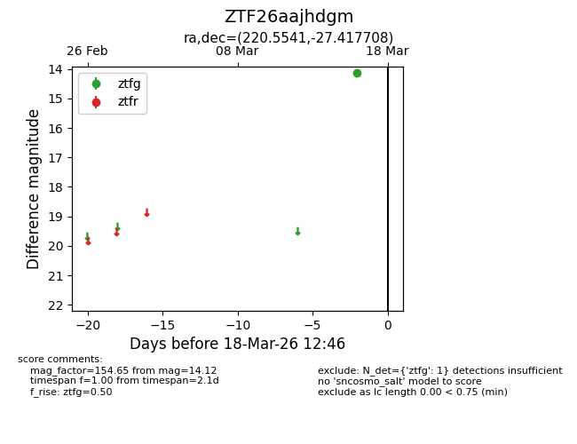
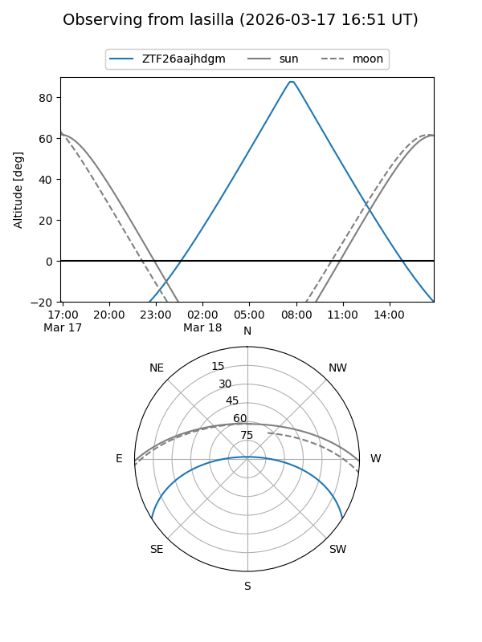
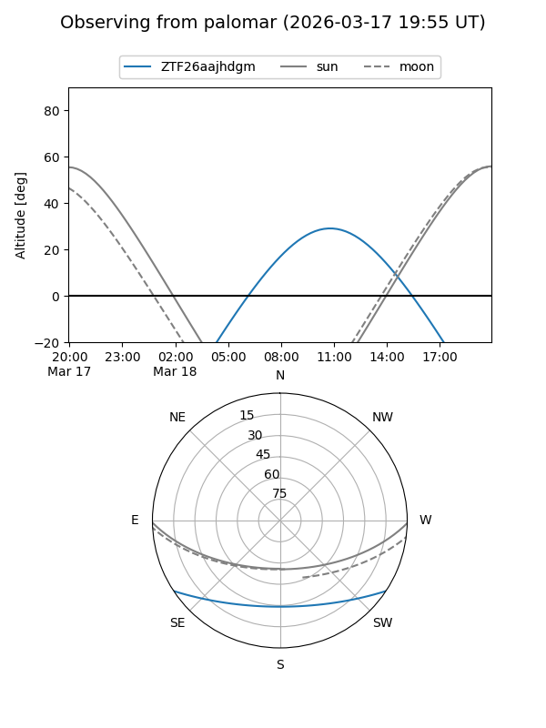

ZTF26aajhdgm
Target ZTF26aajhdgm at 2026-03-18 12:48
Aliases and brokers:
FINK: link
Lasair: link
ALeRCE: link
alt names
ZTF26aajhdgm (ztf,fink_ztf)
Coordinates:
equatorial (ra, dec) = 220.5541,-27.41771
equatorial (HMS+DMS) = 14:42:12.98,-27:25:03.75
galactic (l, b) = (331.1692,+29.31055)
Flags:
Photometry:
last ztfg=14.12
1 ztfg detections
Lightcurve

Visibility


Additional plots